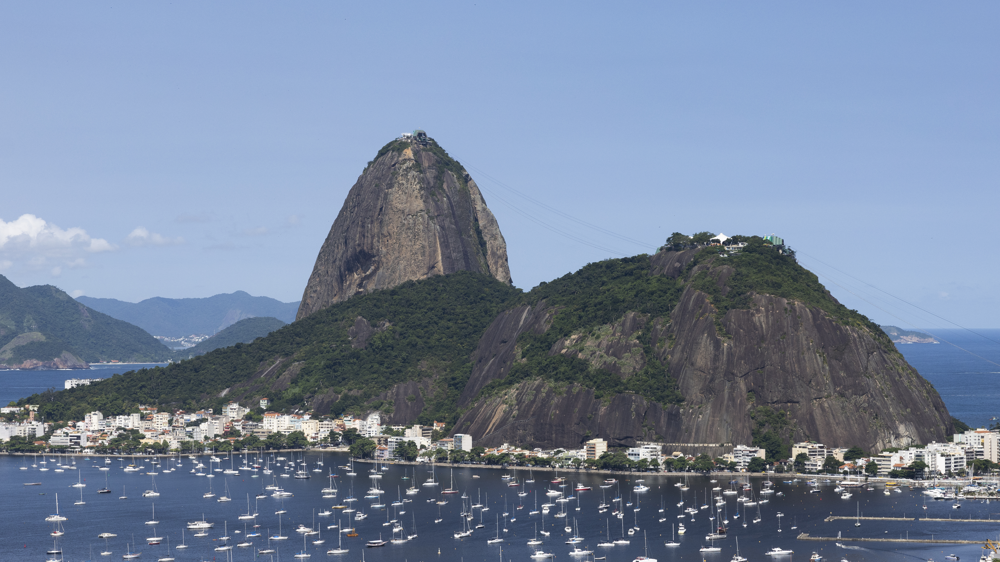
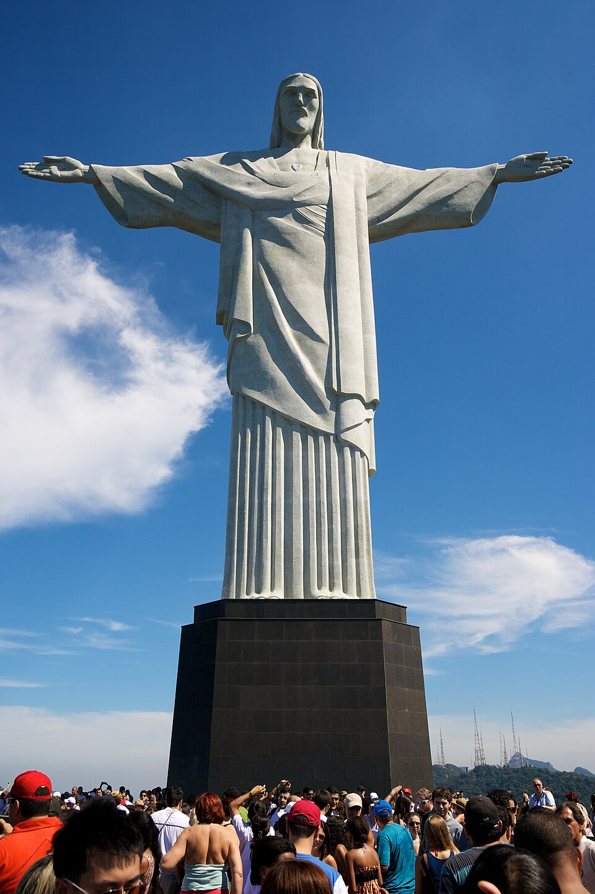
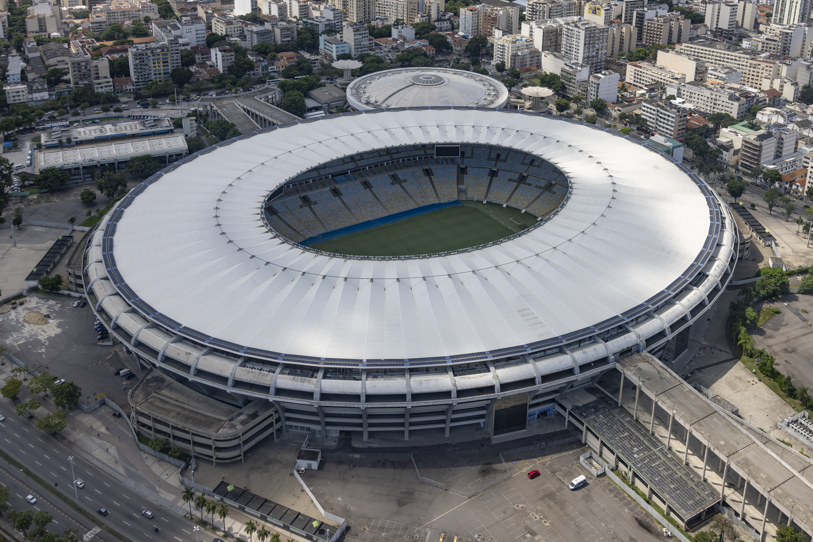
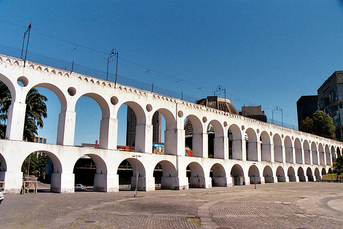
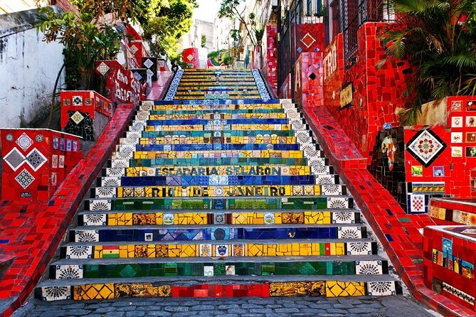

Lugares emblemáticos de Rio de Janeiro
Pan de azúcar

El Pan de Azúcar (en portugués: Pão de Açúcar) es un peñasco situado en Río de Janeiro, Brasil, en la boca de la bahía de Guanabara sobre una península que sobresale en el océano Atlántico.
Lo más probable es que su nombre haga referencia a los panes de azúcar, forma tradicional en que se producía el azúcar hasta finales del siglo XIX y que consistía en largos conos de punta redondeada similares al morro.
Geomorfológicamente, corresponde a un domo muy erosionado, compuesto de un monolito de granito y cuarzo que data del Cenozoico. Su cúspide se sitúa a 396 metros de altitud (1299 pies) sobre el nivel del mar.
Cristo Redentor

Es una estatua art déco que representa a Jesús de Nazaret, con los brazos abiertos, mostrando a la ciudad de Río de Janeiro, Brasil.
La estatua situada en la cima del cerro Corcovado se encuentra a 709 metros sobre el nivel del mar, dominando una parte considerable de la ciudad brasileña de Río de Janeiro. Está construido con hormigón armado y piedra jabón.
La estatua tiene una altura de treinta metros sobre un pedestal de ocho metros. Este monumento fue inaugurado el 12 de octubre de 1931 después de aproximadamente 5 años de construcción.
Símbolo del cristianismo, el Cristo Redentor también se ha convertido en un icono cultural de Río de Janeiro, Brasil y Latinoamérica en su conjunto, y es retratado en el cine, la televisión y la música
Estadio de Maracaná

El Estádio Jornalista Mário Filho (Estadio Periodista Mário Filho), conocido popularmente como Maracanã (Maracaná), es un recinto deportivo mundialista ubicado en la ciudad de Río de Janeiro, Brasil
Inició su construcción a principios de 1949 como parte de los esfuerzos locales por obtener la sede de la Copa Mundial de Fútbol, la cual obtuvo para la edición del año siguiente. Sesenta y cuatro años después volvería a albergar la máxima cita futbolística siendo el escenario de siete partidos en la Copa del Mundo de Brasil 2014
El recinto originalmente se llamó Estadio Municipal, pero en 1964 fue rebautizado con su nombre actual en honor al destacado periodista brasileño Mário Filho.
Arcos da Lapa

El Acueducto Carioca, popularmente conocido como Arcos da Lapa por encontrarse en la zona de Lapa, es una estructura monumental del Centro de Río de Janeiro, Brasil
Considerada como un hito de la arquitectura colonial de Brasil, es hoy una de las postales de la ciudad, el símbolo más representativo de la antigua conservada en el bohemio de río Lapa.
Escalera de Selarón

La Escalera de Selarón o Escadaria de Santa Teresa es una escalera ubicada en el barrio Santa Teresa, junto al convento homónimo, en la ciudad brasileña de Río de Janeiro.
Se hizo conocida internacionalmente por la llamativa decoración que le hizo el artista plástico chileno Jorge Selarón, trabajo que inició en 1990 y que continúa en una renovación constante.
Considerada por su autor como una obra "viva y mutante", la escalera tiene 125 metros y 215 peldaños, y está completamente revestida de piezas de cerámica de distintos colores, tamaños y formas. Algunas de ellas contienen dibujos en su interior.